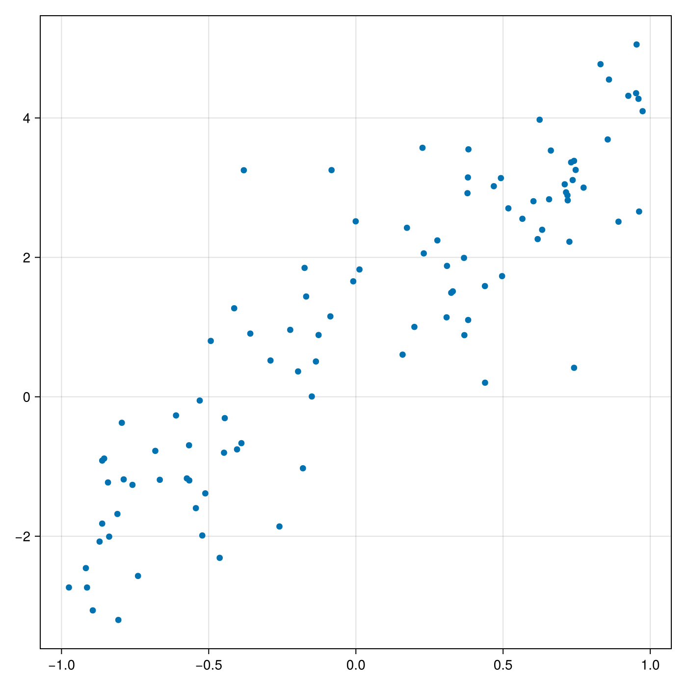
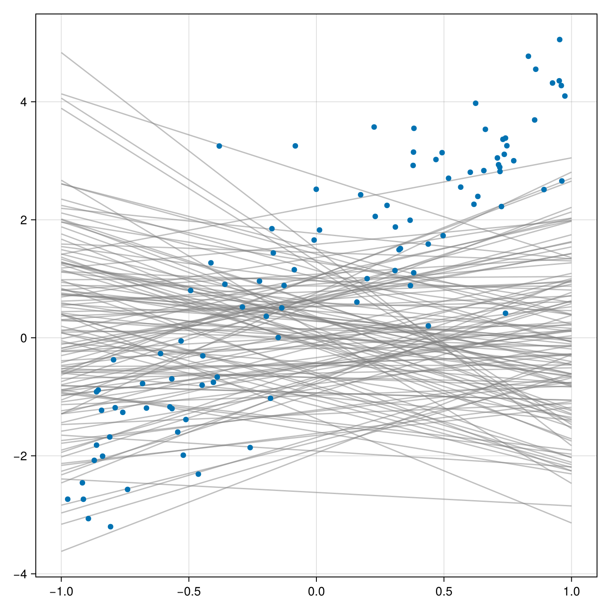
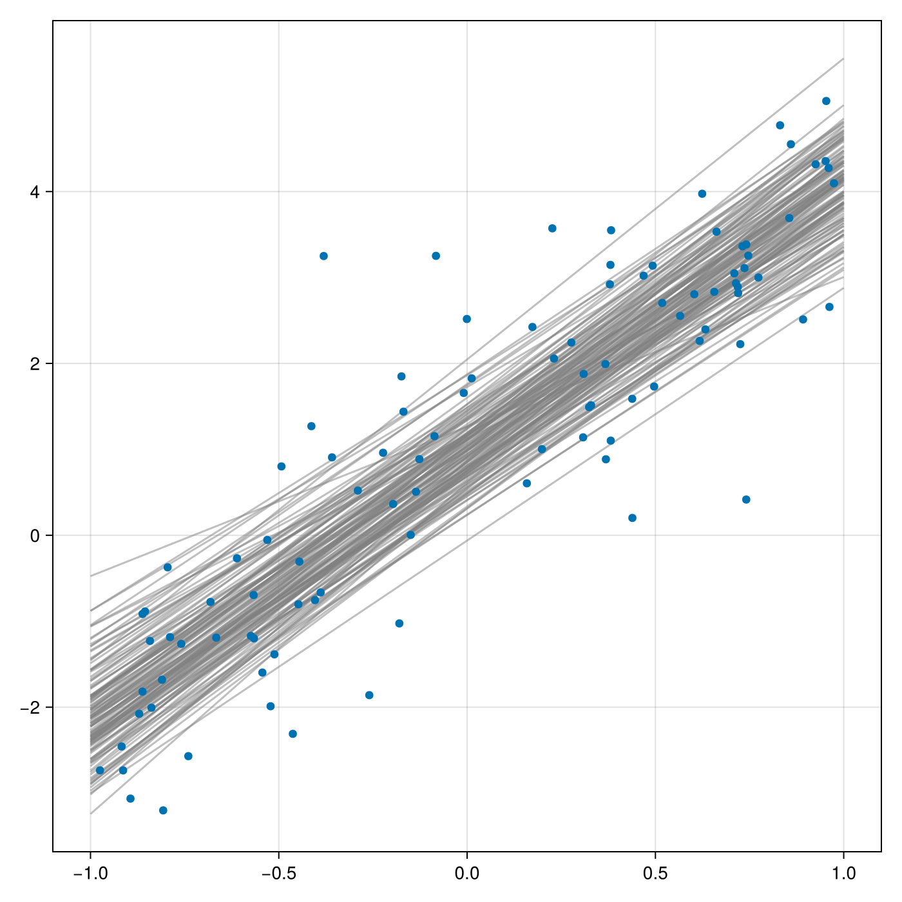
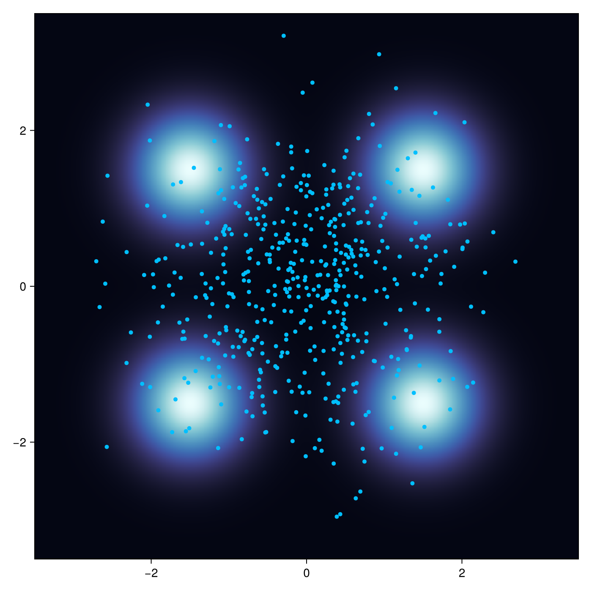
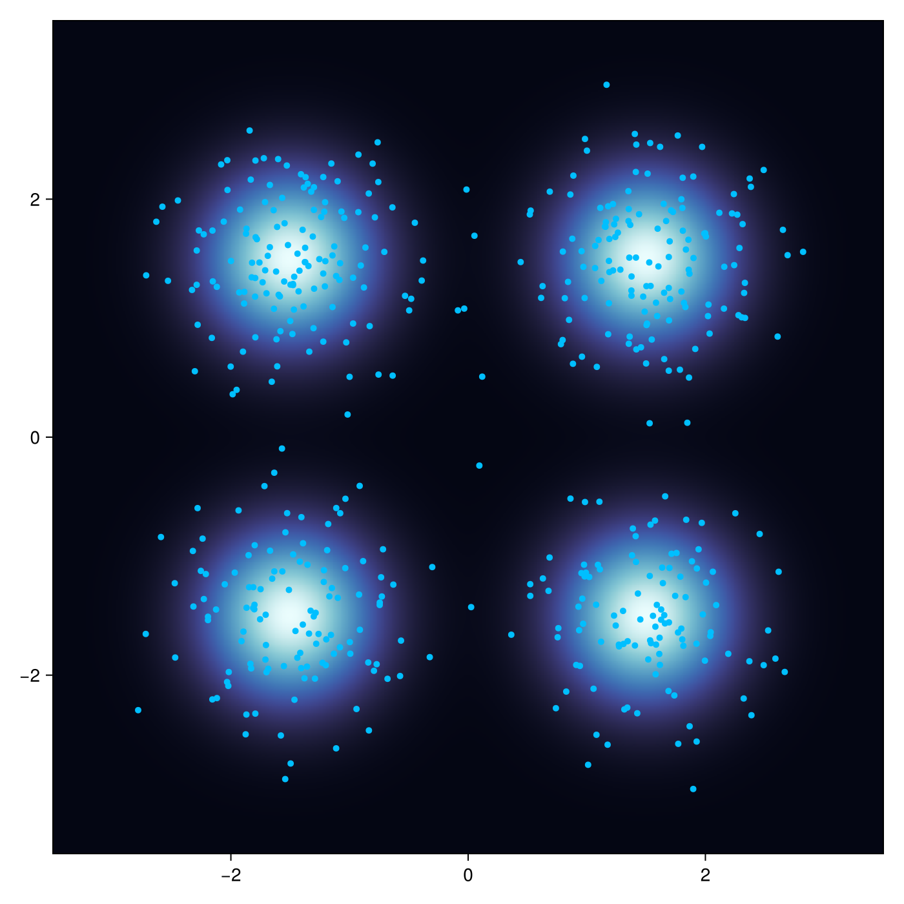

Getting Started
Installation
NonparametricVI.jl is under development, you can install the latest version using Pkg:
Pkg.add(url="https://github.com/BayesianRL/NonparametricVI.jl.git")Or the latest registered version from Julia general repository:
Pkg.add("NonparametricVI")Using with Turing.jl Probabilistic Programs
Example: Linear Regression
Let's craft a toy regression problem:
using DynamicPPL
using NonparametricVI
using LinearAlgebra
using KernelFunctions
using CairoMakie
n = 100
X = 2rand(n) .- 1.0
y = 3X .+ 1 + randn(n)The generated problem looks like this:

We start by defining a simple Turing.jl model for regression and instantiate it:
@model function bayesian_regression(X, y)
α ~ Normal(0.0, 1.0)
β ~ Normal(0.0, 1.0)
for i in eachindex(y)
y[i] ~ Normal(α * X[i] + β, 0.5)
end
end
model = bayesian_regression(X, y)To define the dynamics of Stein Variational Gradient Descent (SVGD), we need a positive-definite kernel. You can use all provided by KernelFunctions.jl. We use a scaled squared exponential kernel. for more details on designing more complex kernels, check out KernelFunctions.jl documentation:
using KernelFunctions
kernel = SqExponentialKernel() ∘ ScaleTransform(0.3)Next we define the parameters of SVGD:
dynamics = SVGD(K=kernel, η=0.003, batchsize=32)Nonparametric Variational Inference methods use a set of particles instead of a parametric family of distribution to approximate posterior (or any target) distribution. The init method creates the particles pc, in addition to an internal context ctx which will be used by the inference procedure.
pc, ctx = init(model, dynamics; n_particles=128)pc is a simple struct containing position of particles. Using get_samples we can access the particles and plot them:
samples = get_samples(pc, ctx)
α_samples = [s[@varname(α)] for s in samples]
β_samples = [s[@varname(β)] for s in samples];Note that some Turing models may contain constrained parameters (e.g. positive, bounded, ...) while most inference methods are performed on an unconstrained space obtained by transforming the original denisty of parameters. The get_samples method transforms the particle positions back to the contrained space. Before running SVGD we can visualize the currest state of particles:

Finally we can perform inference. Note the infer! method modifies the particles in-place.
infer!(pc, ctx; iters=200)After collecting samples with get_samples we can visualize the final result:

Using with LogDensityProblems
In addtion to Turing programs, you can use NonparametricVI for a custom Bayesian inference problem by implementing the LogDensityProblems.jl interface. For example here we define a toy unnormalized mixture density:
struct MixtureDensity end
function LogDensityProblems.capabilities(::Type{<:MixtureDensity})
LogDensityProblems.LogDensityOrder{0}()
end
LogDensityProblems.dimension(::MixtureDensity) = 2
function LogDensityProblems.logdensity(::MixtureDensity, x)
log(0.25 * exp(-1/0.5 * norm(x-[-1.5, -1.5])^2) +
0.25 * exp(-1/0.5 * norm(x-[-1.5, 1.5])^2) +
0.25 * exp(-1/0.5 * norm(x-[ 1.5, -1.5])^2) +
0.25 * exp(-1/0.5 * norm(x-[ 1.5, 1.5])^2))
end
ρ = MixtureDensity()Next we define the inference dynamics by choosing a custom kernel. It can be any kernel provided by KernelFunctions.jl. Here we use a scaled version of the squared exponential kernel:
kernel = SqExponentialKernel() ∘ ScaleTransform(2.0)
dynamics = SVGD(K=kernel, η=0.5, batchsize=16)Now we create a set of particles that represent samples:
pc, ctx = init(ρ, dynamics; n_particles=512)We can access particle positions by get_samples and visualize the their current position:
S = get_samples(pc)
Obviously the initial samples does not match the target density. Now we run the SVGD dynamics to adjust the samples:
infer!(pc, ctx; iters=100)
S = get_samples(pc)Finally we can check the terminal position of particles:
